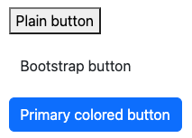
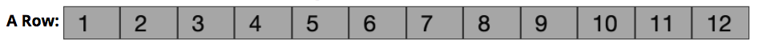
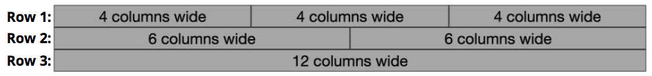

Chapter 9 Framework CSS
Le lezioni precedenti hanno mostrato come usare CSS per rendere una pagina sia bella sia responsive. Sebbene sia possibile implementare un intero sito creando le proprie regole CSS, questo puo’ diventare rapidamente noioso: spesso vuoi una serie di regole “standard” (perche’ l’aspetto senza stile del browser) e poi personalizzarle a tuo piacimento.
Per questo motivo, la maggior parte degli sviluppatori web professionisti usa un CSS Framework esistente. Un CSS Framework e’ uno stylesheet (un file .css) che contiene molte regole predefinite che puoi applicare alla pagina. I framework offrono diversi benefici:
- Applica uno styling di default gradevole a tutti gli elementi HTML: i framework rendono le pagine subito piu’ belle con regole su selector di elementi. Forniscono font piacevoli, interlinea, spaziatura e styling dei link senza sforzo aggiuntivo.
- Fornisce class di stile per componenti UI comuni: gli stylesheet dei framework includono class CSS che puoi aggiungere al markup per badge, tab in-page, drop-down button, layout multi-colonna e altro. I framework permettono di stilizzare la pagina con class, invece di scrivere molte regole per lo stesso effetto.
I CSS framework sono pensati per rendere il lavoro piu’ semplice ed efficiente, pur permettendoti di personalizzare e usare tutta la potenza di CSS.
Ci sono molti CSS framework tra cui scegliere. Alcuni popolari:
Bootstrap e’ il framework CSS piu’ usato sul web. A volte chiamato “Twitter Bootstrap”, e’ stato creato in Twitter per dare coerenza agli strumenti interni, poi rilasciato open source nel 2011. La sua popolarita’ ha pro e contro: e’ ben testato, documentato e supportato, ma e’ cosi’ diffuso che il suo look di default e’ diventato un po’ cliche’.
Al momento, l’ultima release principale di Bootstrap e’ v5, rilasciata a maggio 2021. E’ un aggiornamento importante rispetto alla v4 (2017). Nota che Bootstrap 4 ha introdotto Flexbox come base per il grid system, con migliori performance. Per questo e altri motivi, Bootstrap 4+ non supporta IE 9 o precedenti. Per browser vecchi dovresti usare una versione ancora piu’ vecchia – o probabilmente evitare il framework.
Questo testo usa Bootstrap 5 come esempio. E’ consigliato usare sempre l’ultima versione di una libreria o framework. Assicurati di leggere la documentazione della versione corretta!Foundation ha la reputazione di essere piu’ “in anticipo” rispetto a Bootstrap (introduce nuove funzionalita’ prima). Per esempio, e’ stato il primo framework con design responsive mobile-first e ha fornito una grid basata su Flexbox molto prima di Bootstrap. Foundation ha quasi gli stessi elementi UI di Bootstrap ma con un look diverso (personalizzabile con uno strumento web).
Material Components for the Web (MCW) e’ l’implementazione ufficiale del linguaggio visivo Material Design di Google. E’ l’aspetto di molti prodotti Google e app Android. Material Design e’ molto opinionato, quindi MCW e’ difficile da personalizzare. I nomi delle class MCW sono molto verbosi perche’ seguono lo schema Block, Element, Modifier (BEM).
Materialize e’ l’altra implementazione Material Design popolare. E’ open-source, quindi non fornita da Google. Tuttavia e’ strutturalmente simile a Bootstrap, rendendola facile da imparare e popolare tra chi conosce Bootstrap.
normalize.css non e’ un framework completo, ma una utility che fa browser normalization (“reset”).
normalize.cssstandardizza le differenze tra browser e rende lo stesso HTML/CSS piu’ consistente. Nota che molti framework includono una variante di questo pacchetto (ad es. Bootstrap include una fork chiamata Reboot).Se scegli di non usare un framework, dovresti comunque includere
normalizeper rendere i siti consistenti tra browser.
Esistono anche altri framework, ciascuno con pro e contro (ad es. Skeleton e’ ultra-leggero ma con meno funzionalita’).
9.1 Usare un framework
La cosa importante e’ che un CSS framework e’ solo uno stylesheet con regole scritte da qualcun altro. Non c’e’ nulla di magico. Puoi guardare il CSS e vedere tutte le regole – sono cose che potresti scrivere anche tu (anche se alcune sono complesse). Ma queste regole sono state create da professionisti e testate su molti browser per risultati consistenti, quindi conviene costruire sopra di esse invece di reinventare la ruota.
Per esempio, puoi vedere il file normalize.css su https://necolas.github.io/normalize.css/8.0.1/normalize.css e notare che e’ esattamente il CSS che potresti scrivere da solo.
Includere un framework
Poiche’ un CSS framework e’ solo un file CSS, lo includi con un <link> come qualsiasi stylesheet:
<head>
<!--... altri elementi qui...-->
<link rel="stylesheet"
href="https://cdn.jsdelivr.net/npm/bootstrap@5.2.3/dist/css/bootstrap.min.css">
<link rel="stylesheet" href="css/my-style.css">
</head>Importante! Collega il framework prima del tuo stylesheet. CSS e’ letto top-to-bottom, e l’ultima regola vince. Mettendo il tuo CSS dopo, le tue regole sovrascriveranno quelle del framework, permettendoti di personalizzare l’aspetto.
Per esempio,
bootstrap.cssimpostafont-familydel<body>su"Segoe UI"(sans-serif); potresti voler un carattere diverso:/* my-style.css */ body { font-family: 'Comic Sans'; }Se includessi il tuo stylesheet prima nel
<head>, la tua regola verrebbe applicata ma poi sovrascritta dabootstrap.css, facendo sembrare che non funzioni. Quindi metti sempre il tuo CSS come ultimo<link>, dopo i framework.
E’ molto comune includere le versioni minificate dei framework: di solito chiamate .min.css (es. bootstrap.min.css). Un file minificato ha commenti e spazi rimossi, quindi e’ piu’ piccolo (Bootstrap passa da 160 KB a ~127 KB). Pagina piu’ piccola = download piu’ veloce. Un CSS non minificato non e’ un disastro, ma lo spazio extra non ti serve.
- Quasi sempre puoi passare da minificato a non minificato cambiando il nome file tra
file.cssefile.min.css(se usi una CDN).
Ci sono diversi modi per accedere a uno stylesheet di un framework:
Link a una CDN
L’opzione piu’ semplice e’ collegarsi a una Content Delivery Network (CDN), un servizio pensato per servire rapidamente file comuni usati da molti siti. Basta mettere l’URL della CDN nell’href del <link> (come sopra).
CDNJS e’ una CDN per pacchetti e librerie gestita da Cloudflare ed e’ un buon punto di partenza se non sai il link CDN. Altri pacchetti hanno CDN diverse (ad es. Bootstrap consiglia jsdeliver.net).
Oltre alla semplicita’, le CDN offrono un vantaggio di velocita’: replicano i file in piu’ regioni e usano DNS per servire l’utente dal server piu’ vicino. Un utente in Australia potrebbe scaricare Bootstrap da un server a Singapore, uno in Francia da un server in Irlanda, ecc. Questo accelera il download.
Inoltre, le CDN sfruttano la browser cache: il browser salva versioni scaricate per evitare di riscaricarle. Se piu’ siti usano la versione CDN di Bootstrap, il browser scarica il file solo la prima volta. Con framework popolari, e’ probabile che l’utente abbia gia’ visitato un sito che usa Bootstrap, quindi il file e’ gia’ in cache.
Infine, le CDN permettono ai framework di essere accessibili come servizio, quindi gli autori possono patchare bug rapidamente (se non rompono il codice) senza intervento dello sviluppatore che usa il framework. (Questo puo’ anche essere visto come un contro: devi fidarti degli autori).
L’unico vero svantaggio delle CDN e’ che non funzionano offline. Se sviluppi offline o costruisci un’app offline, devi usare un altro metodo.
Scaricare il sorgente
Se non puoi usare una CDN, devi scaricare il file sorgente sul computer e salvarlo nel progetto (spesso in lib/). I file si trovano sul sito del framework o nel repo GitHub (cerca il .css o la cartella dist/).
Oltre a funzionare offline, scaricare i CSS offre altri vantaggi:
- I framework possono permettere di personalizzare il contenuto prima di scaricare: scegli componenti e modifica styling di base prima di ottenere il file.
- Se usi un pre-compiler CSS come SASS, puoi modificare mixin e variabili per personalizzare font, colori, dimensioni, ecc.
- Se usi un build system come webpack, puoi combinare tutti i CSS in un singolo file, riducendo il numero di file da scaricare e aumentando la velocita’ (soprattutto su reti mobili lente).
Nota che puoi usare un package manager come npm per scaricare e gestire i framework. Questo evita di aggiungere file grandi al repo e ti permette di gestire dipendenze facilmente.
Ricorda che puoi installare un package con npm, salvandolo nel package.json:
# install bootstrap (latest version)
npm install bootstrapQuesto installa il codice sorgente in node_modules/. Poiche’ la dipendenza e’ in package.json, puoi escludere node_modules/ dal repo con .gitignore e far installare le dipendenze agli altri con npm install. Puoi anche usare npm per aggiornare i pacchetti (es. quando esce una nuova versione di Bootstrap).
Nota che, per includere il framework nella pagina, devi linkare il file .css dentro node_modules. La posizione non e’ uniforme tra framework o versioni, quindi dovrai cercarla:
<!-- nota il path RELATIVO al file -->
<link rel="stylesheet" href="node_modules/bootstrap/dist/css/bootstrap.min.css"><link> relativo funziona solo se node_modules e’ disponibile nel path atteso – e poiche’ non vuoi mai committare node_modules su git (e’ enorme), non e’ una soluzione valida per la pubblicazione (es. GitHub Pages). Per questo, quasi sempre conviene usare una CDN. L’unica eccezione e’ quando usi un build system (come React con Webpack) che incorpora il modulo nel bundle.
9.2 Bootstrap
Questa sezione discute alcune funzionalita’ e usi del framework Bootstrap. Molti altri framework si usano in modo simile (con class e componenti diversi).
Includi Bootstrap linkando il suo .css nella pagina (CDN o file locale). Puoi ottenere il link per l’ultima versione dalla homepage di Bootstrap.
<link rel="stylesheet"
href="https://cdn.jsdelivr.net/npm/bootstrap@5.2.3/dist/css/bootstrap.min.css"
integrity="sha384-rbsA2VBKQhggwzxH7pPCaAqO46MgnOM80zW1RWuH61DGLwZJEdK2Kadq2F9CUG65"
crossorigin="anonymous">(Questo <link> ha 2 attributi opzionali: integrity fornisce un hash crittografico per verificare il file; crossorigin indica che non vengono inviate credenziali al server remoto – vedi AJAX per una discussione piu’ dettagliata).
Quando includi Bootstrap, vedrai subito gli effetti (di solito in meglio): font di default diverso, margin cambiati, ecc. Il file CSS di Bootstrap contiene regole che si applicano agli elementi senza lavoro extra, incluso <body> e header. Vedi la documentazione per lo styling di default (e tutta la sezione “Content” della documentazione).
Class di utilita’
Oltre alle regole di base, Bootstrap include molte regole applicabili agli elementi con una specifica class. Queste utility class sono la fonte di potenza e flessibilita’.
Per esempio, Bootstrap offre text utilities per stilizzare testo con class, invece di scrivere nuove regole. Ad esempio, puoi centrare il testo con text-center:
<p class="text-center">Questo testo sara' centrato su tutte le dimensioni del viewport.</p>Hai solo aggiunto una class all’HTML, come per qualsiasi regola CSS. Bootstrap contiene una regola che si applica a quella class:
/* da bootstrap.css */
.text-center {
text-align: center !important;
}Potresti scrivere la stessa regola, ma Bootstrap la fornisce integrata, cosi’ puoi concentrarti sulla semantica del contenuto invece che sul CSS.
(Noterai che bootstrap.css usa spesso !important. Serve per sovrascrivere altre regole indipendentemente dalla specificita’. Se vuoi sovrascrivere questa regola – ad es. non vuoi testo centrato – non provare a vincere con !important. Rimuovi la class Bootstrap. Se non vuoi l’effetto, non usare quella class, e mai usare !important.)
Molti elementi devono avere una utility class per usare lo styling Bootstrap. Per esempio, per dare a un <button> lo stile Bootstrap serve la class btn. Questo ti permette di usare lo stile Bootstrap senza essere obbligato a sovrascriverlo se vuoi un look diverso.
<button>Button semplice</button>
<button class="btn">Button Bootstrap</button>
<button class="btn btn-primary">Button con colore primary</button>
L’ultimo button ha una class aggiuntiva btn-primary che specifica lo stile colore. Bootstrap fornisce vari stili colore predefiniti, con nomi semantici (es. primary o warning).
Le stesse class colore si applicano a testo (es. text-primary), background (es. bg-primary), alert (es. alert-warning) e altro. Modificando il sorgente SASS di Bootstrap puoi personalizzare questi colori mantenendo coerenza nel tema.
Nota che puoi usare la class btn anche su altri elementi (es. <a>) per farli sembrare button.
<a class="btn btn-primary" href="#">Un link</a>Questo ti permette di mantenere il significato semantico dell’HTML anche se lo stile cambia. Qualcosa che l’utente clicca per navigare e’ un hyperlink (<a>), anche se vuoi che sembri un button.
“Stackare” utility class e’ comune in Bootstrap: non e’ raro che un elemento abbia 4 o 5 class per specificare l’aspetto. Per esempio, puoi usare le spacing utilities per impostare lo spacing attorno a un elemento:
<div class="p-3 pt-1 mx-2 mb-2">Un elemento con padding e spaziatura</div>Questo elemento ha p-3 (3 spacer di padding su tutti i lati), pt-1 (1 spacer di padding in alto), mx-2 (2 spacer di margin sull’asse x sinistra/destra) e mb-2 (2 spacer di margin in bottom).
Bootstrap e’ pieno di utility class, sia per styling generico (es. borders o position), sia per contenuti specifici (es. lists, tables, forms). Offre anche class per gestire i flexbox. Esplora la documentazione per dettagli.
Bootstrap include anche linee guida e class che supportano i lettori di schermo. Per esempio, .visually-hidden serve per rendere un elemento percepibile solo ai lettori di schermo.
Le utility class non significano che non dovrai mai scrivere CSS! Anche se Bootstrap copre molti casi comuni, quasi sempre dovrai aggiungere personalizzazioni per ottenere l’aspetto desiderato. Al minimo, regole CSS che si applicano a molti elementi possono rendere lo styling piu’ leggibile e consistente.
Design responsive
Una funzionalita’ importante di Bootstrap (e altri framework) e’ il supporto a mobile-first, pagine web responsive. Molte utility class Bootstrap usano media query per reagire alla dimensione dello schermo.
Bootstrap usa un set predefinito di responsive breakpoints: larghezze che segnano i confini tra dispositivi di dimensioni diverse.
| Larghezza schermo | Abbreviazione | Dimensione approssimativa del device |
|---|---|---|
| < 576px | (default) | Dispositivi extra-small (es. telefoni in verticale) |
| >= 576px | sm |
Dispositivi small (es. telefoni in orizzontale) |
| >= 768px | md |
Dispositivi medium (es. tablet) |
| >= 992px | lg |
Dispositivi large (es. laptop) |
| >= 1200px | xl |
Dispositivi extra-large (es. desktop) |
| >= 1400px | xxl |
Dispositivi extra-large (es. desktop grandi) |
Tutte queste specifiche sono “greater than or equal”, seguendo l’approccio mobile-first. Quindi una utility che si applica a md si applica anche a lg e xl.
Le responsive utilities sono nominate con l’abbreviazione della dimensione per indicare su quali schermi si applicano. Per esempio, la class float-left fa fluttuare un elemento a sinistra su qualsiasi schermo (nessuna dimensione specificata). Invece float-md-left fa fluttuare a sinistra solo su schermi medium o piu’ grandi. float-lg-left solo su large o piu’ grandi. Questo permette di far fluttuare un’immagine su schermi grandi, ma lasciarla in flow normale quando non c’e’ spazio. (Non usare float; usa Flexbox.)
- Le abbreviazioni dei breakpoint sono consistenti in Bootstrap (e spesso condivise da altri framework come Materialize) e di solito vanno dopo il nome della property ma prima del valore. Per esempio,
d-noneapplicadisplay:nonesu tutti i device, mentred-sm-nonesolo su small o piu’ grandi.
Molte (ma non tutte) le class Bootstrap supportano i breakpoint. La classe piu’ comune e’ container. I container sono l’elemento di layout base di Bootstrap e sono richiesti per layout complessi (come la Grid, sotto). container assegna all’elemento una larghezza fissa con padding laterale, cosi’ il contenuto non e’ a filo finestra. Se la finestra si restringe, container si ridimensiona per mantenere un po’ di padding anche su schermi piccoli.
Vedi questo CodePen. Ridimensionando il browser, vedrai il testo “saltare” a larghezze diverse ai breakpoint.
Gli elementi
.containersono spesso figli diretti di<body>(es.<header>,<main>). Se vuoi un background full bleed fino ai bordi del viewport, puoi mettere.containerdentro un altro elemento che ha lo sfondo, come nel CodePen.Non mettere un
.containerdentro un altro. Aggiungerebbe padding multipli quasi sicuramente non desiderati. Inoltre, poiche’.containere’ un nome generico, fai attenzione a non usarlo per le tue class; ad esempio, un container flexbox potrebbe chiamarsi.flexbox-container.Bootstrap offre anche
container-fluid, che mantiene sempre lo stesso padding attorno al contenuto, con reflow in base alla dimensione del browser.
In generale, ogni pagina stile Bootstrap avra’ un Container (di solito .container) per contenere il contenuto.
La Grid
Dopo i Container, l’uso piu’ comune delle responsive utilities nei framework (come Bootstrap) e’ il layout a grid, simile ai layout multi-colonna creati con Flexbox. Il sistema Grid di Bootstrap permette di creare layout responsive complessi senza implementare Flexbox manualmente.
In Bootstrap 5, la grid e’ implementata con Flexbox – quindi puoi pensarla come un altro modo semantico di definire elementi flexbox.
Per indicare che un insieme di elementi fa parte di una “grid”, li metti dentro un elemento .row (la class row assicura che gli elementi siano allineati). Una .row agisce come un “flex-container” (e infatti ha display:flex), dove i child sono “flex items”.
<div class="row"> <!-- una riga di elementi -->
<div class="col-6">Elemento 1</div>
<div class="col-4">Elemento 2</div>
<div class="col">Elemento 3</div>
</div>Per indicare quanto e’ larga ciascuna colonna, specifichi il numero di “colonne” che occupa. Pensa alla grid come a 12 slot:

Ogni item ha una class che indica quanti slot occupa (simile al merge di celle in un foglio di calcolo):

Le class sono nel formato col-#, dove # e’ il numero di colonne. Per esempio, .col-4 occupa 4 colonne, .col-6 occupa 6. Una class col occupa una quota uguale delle colonne rimanenti (simile a flex-grow).
Quindi l’HTML sopra produce questo layout:
- Nota che “Elemento 1” occupa meta’ (6/12), “Elemento 2” un terzo (4/12) e “Elemento 3” il resto (2/12).
Puoi rendere la grid responsive usando versioni responsive delle class col-#. Per esempio, .col-md-4 occupa 4 colonne solo su schermi medium o piu’ grandi, mentre .col-lg-6 occupa 6 colonne solo su large o piu’ grandi. Nota che un child di .row senza dimensione colonna agira’ come una riga separata (su una propria linea).
Infine, puoi specificare piu’ utility responsive per item. Per esempio, puoi farli occupare 6 colonne su small o piu’ grandi (col-sm-6), ma 3 colonne su medium o piu’ grandi (col-md-3):
<div class="row">
<div class="col-sm-6 col-md-3">Elemento 1</div>
<div class="col-sm-6 col-md-3">Elemento 2</div>
<div class="col-sm-6 col-md-3">Elemento 3</div>
<div class="col-sm-6 col-md-3">Elemento 4</div>
</div>(Vedi un CodePen in azione.)
L’ordine del CSS di Bootstrap significa che col-sm-6 viene sovrascritto da col-md-3 (perche’ md e’ piu’ specifico di sm), quindi puoi specificare entrambe le class e quella corretta si applichera’ – l’ordine delle class nell’elemento non importa. Nota anche che, per via del concetto “or larger”, non serve specificare una larghezza per ogni breakpoint, solo per il livello minimo in cui vuoi che si applichi (ad es. non serve col-lg- se non e’ diverso da col-md-).
Bootstrap include molte utility per personalizzare la grid, incluse le funzionalita’ di Flexbox. Per dettagli e opzioni, vedi la documentazione della Grid.
Componenti
Oltre alle utility di base e responsive, Bootstrap offre class per creare componenti o widget piu’ complessi: alert, card, navbars, box collapsibili, carousels, modali, ecc. Ogni componente e’ descritto nella documentazione, con la sua struttura di elementi e class necessarie.
Per esempio, puoi creare una card (container di contenuto stilizzato) usando un elemento con class card e un child card-body. Poi puoi includere altri elementi con class come card-img-top, card-title o card-text per effetti di stile:
<div class="card"> <!-- la card -->
<img class="card-img-top" src="..." alt="immagine in cima alla card">
<div class="card-body"> <!-- il "body" della card -->
<h4 class="card-title">Titolo della card</h4>
<p class="card-text">Testo della card che appare sotto il titolo.</p>
<a href="#" class="card-link">Link azione 1</a>
<a href="#" class="card-link">Link azione 2</a>
</div>
</div>(Vedi questo codice su CodePen).
Molti di questi componenti includono interattivita’: per esempio, la navbar si “collassa” in hamburger menu su schermi piccoli, mentre le modals aggiungono popup in pagina.
CSS non puo’ gestire questo livello di interattivita’ – serve JavaScript. Quindi per supportare questi componenti devi includere la libreria JavaScript di Bootstrap:
<!-- la libreria JavaScript di Bootstrap -->
<script src="https://cdn.jsdelivr.net/npm/bootstrap@5.2.3/dist/js/bootstrap.bundle.min.js"></script>Vedi il capitolo JavaScript per dettagli su come includere librerie JS. Nota che non tutti i componenti richiedono JavaScript.
Tuttavia, con la maggior parte dei componenti Bootstrap non devi scrivere JS. Ti basta aggiungere alcuni data- attribute HTML, e la libreria fa il resto.
- I data attributes sono attributi HTML che iniziano con
data-(es.data-thingamabobodata-my-attribute). Lo standard HTML dice che gli attributidata-sono legali ma non standardizzati, quindi possono essere usati per informazioni specifiche dell’app. Agiscono come “variabili” personalizzate sugli elementi senza violare lo standard HTML.
Per esempio, ecco il codice dalla documentazione Bootstrap per una modal e un button per aprirla:
<!-- nota che l'attributo `id` e' impostato a "exampleModal" -->
<div class="modal fade" id="exampleModal" tabindex="-1" aria-labelledby="exampleModalLabel" aria-hidden="true">
<div class="modal-dialog">
<div class="modal-content">
<div class="modal-header">
<h1 class="modal-title fs-5" id="exampleModalLabel">Titolo della modal</h1>
<button type="button" class="btn-close" data-bs-dismiss="modal" aria-label="Chiudi"></button>
</div>
<div class="modal-body">
...
</div>
<div class="modal-footer">
<button type="button" class="btn btn-secondary" data-bs-dismiss="modal">Chiudi</button>
<button type="button" class="btn btn-primary">Salva modifiche</button>
</div>
</div>
</div>
</div>
<!-- data-toggle deve essere impostato a "modal" e data-target deve essere impostato
al valore dell'attributo `id` sull'elemento che avvia il markup della modal -->
<button type="button" class="btn btn-primary" data-bs-toggle="modal" data-bs-target="#exampleModal">
Apri la modal
</button>(Provalo su CodePen).
C’e’ molto da capire in questo codice, incluse class di stile e attribute ARIA (role, aria-labelledby, aria-hidden). La parte importante e’ che l’elemento .modal e’ nascosto (display:none) al caricamento. Quando clicchi il <button>, la libreria JS vede data-toggle="modal" e determina che deve aprire la modal. Usa data-target per capire quale modal aprire (quella con l’id), e la mostra. L’attribute data-dismiss nel button dentro la modal permette di chiuderla.
Il modo migliore per capire questi componenti e’ partire dagli esempi in documentazione e poi analizzare ogni elemento e attribute. Leggi la documentazione!
Il JavaScript dei CSS framework permette di aggiungere facilmente interattivita’, ma non si integra bene con framework JavaScript avanzati come React. Per React, dovresti usare librerie come react-bootstrap, che usano il CSS di Bootstrap ma re-implementano la parte JS per funzionare con React.